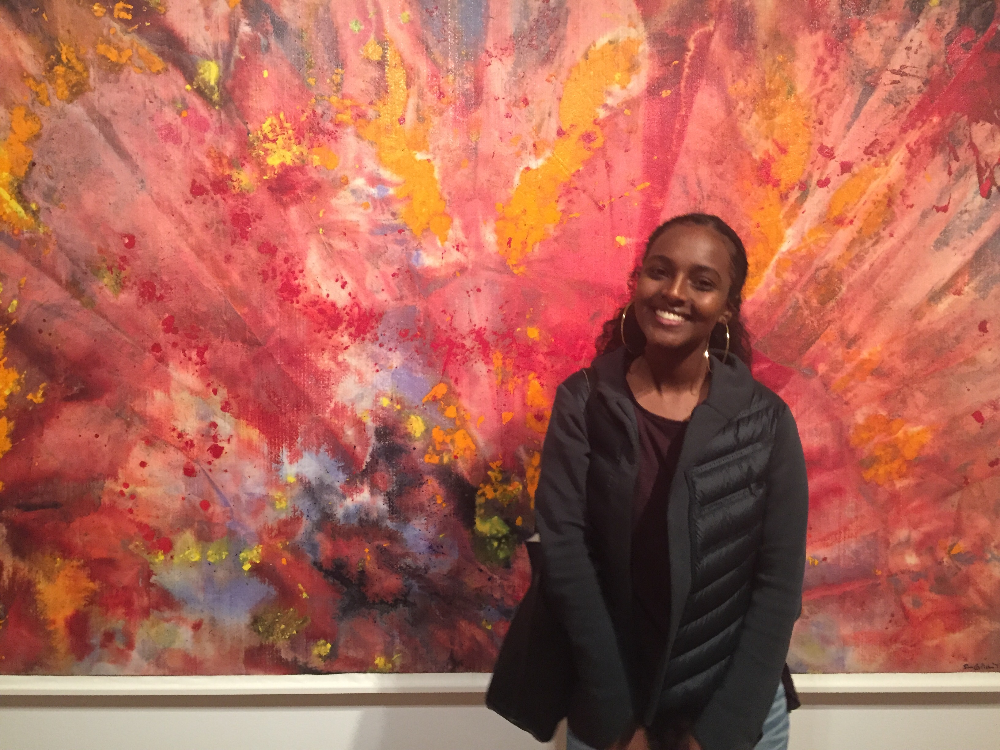

I was born in Eritrea, a small country in east Africa. My family and i lived in Eritrea until i was 6 years old then we moved to Egypt. After 5 years in Egypt and making amazing memories we moved to the United States. I was born on september 30, 1999 the day my brother turned 3. I'm the best birthday present he's ever gotten. I also have two sisters that i love bothering everyday.
Something we realized about the circuits is that the the long side of the Led wire has to be on the negative side. My favorite part of robot's dance is that we were able to succesfully make it go around as the song played. the idea was to show it dancing around and we were able to show that to the class. Both Manuela Veloso and Ayanna Howard would need sensorce that reconize other objects.
I would like to add the rest of the steps i never got to finish to my Django site. Expecialy colors to make it more interesting to look at.